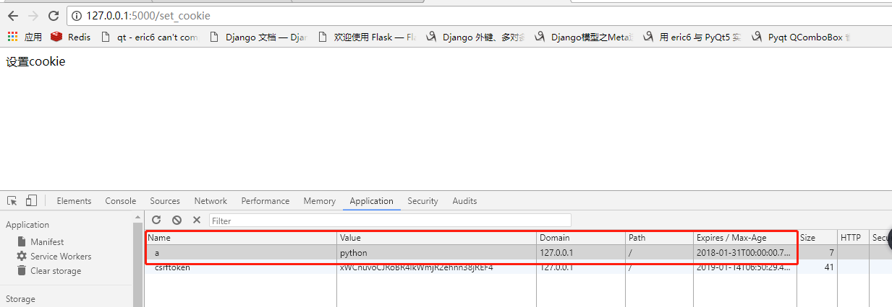

cookie
response对象的 set_cookie 方法来设置 Cookies。 request对象的 cookies 属性是客户端提交过来的所有cookie键值对，字典类型。
设置cookie
cookie 是以键值对的形式保存在浏览器中。
设置cookie我们比较关心的三个参数：
key cookie的键
value cookie的值
max_age=None 超时时间，单位是秒
expires=None 超时时间，datatime对象
@app.route('/set_cookie')
def set_cookie():
"""设置cookie"""
resp = make_response('设置cookie')
# 向浏览其中写入一个key为a,值为python，超时时间在2018,1,31日
#resp.set_cookie('a', 'python', expires=datetime.datetime(2018, 1, 31))
# 向浏览其中写入一个key为a,值为python，超时时间是60*60秒之后
resp.set_cookie('a', 'python', max_age=60*60)
return resp
访问视图在浏览器开发者工具中可以看到写入的cookie:

获取cookie
request 对象中的cookie属性是包含了所有浏览器上传到服务器的cookie。 get 方法获取其中的键值，可以传一个默认值。
@app.route('/get_cookie')
def get_cookie():
"""获取cookie"""
# 通过键获取cookie值，如果没有这个键返回None
a = request.cookies.get('a')
print(a)
# 可以传一个默认值，如果不存在这个键，将使用默认值。
b = request.cookies.get('b', 'not found')
print(b)
return '获取到的cookie是： a: %s b:%s' % (a, b)
删除cookie
@app.route('/del_cookie')
def del_cookie():
"""删除cookie"""
response = make_response('删除cookie')
# 将key为a的cookie 删除
response.delete_cookie('a')
return response